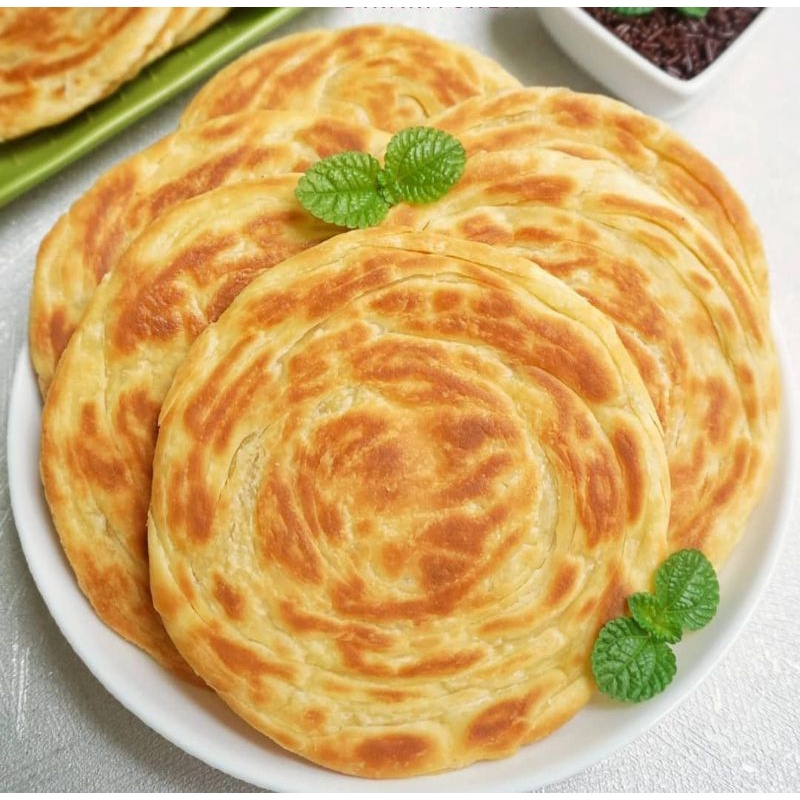
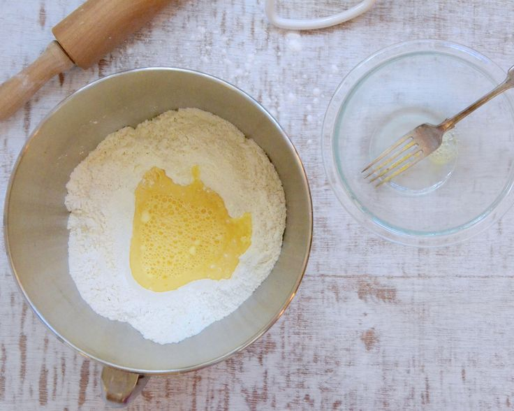
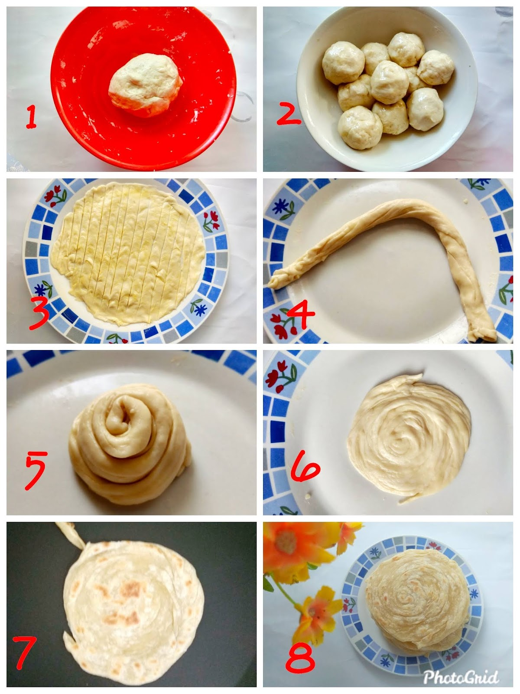
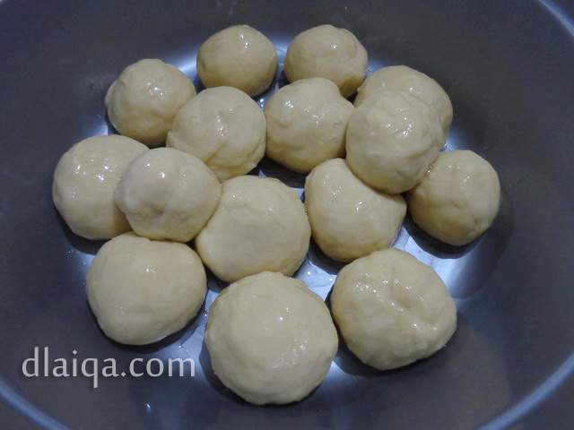

Resep Kue Maryam
Bahan-bahan:

- 250 gr tepung terigu
- 1 butir telur
- 3 sdm margarin, lelehkan
- 100 ml air hangat
- 2 sdm susu bubuk (optional)
- 1/2 sdt garam
- maergarin leleh untuk olesan
- minyak untuk merendam
Langkah-Langkah
- Campur semua bahan roti jadi satu

- Uleni sampai kalis (aku pake tangan) jangan takut jika adonan lengket ya, lumuri tangan sesekali dg tepung (tapi jangan menambah tepung) uleni terus sampai adonan kalis.

- Kalisnya adonan canai tidak sekalis adonan roti ya,kira2 seperti ini sudah cukup
